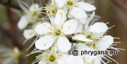

")

| Phrygana: la Nature en Crète principalement, mais aussi d'ailleurs ... |
|  |
|
|
| Prunus spinosa | Ambigolimax valentianus | Cyperus polystachyos |
| Espèces: 1483--- Faune: 574 -- Flora: 881 -- Galles (Bacteria): 2 -- Champignons: 25 -- Lichens: 1 | |||||
| Nouveautés | |||||
| Fauna: | Osmia cornuta | Flora: | Ipomoea littoralis | Flora: | Staphylea colchica |
| Flora: | Dimocarpus longan | Flora: | Dypsis decaryi | Flora: | Camonea umbellata |
| Fauna: | Phytomyza solidaginis | Flora: | Musa velutina | Fauna: | Anous stolidus |
| 09 juillet 2024 |